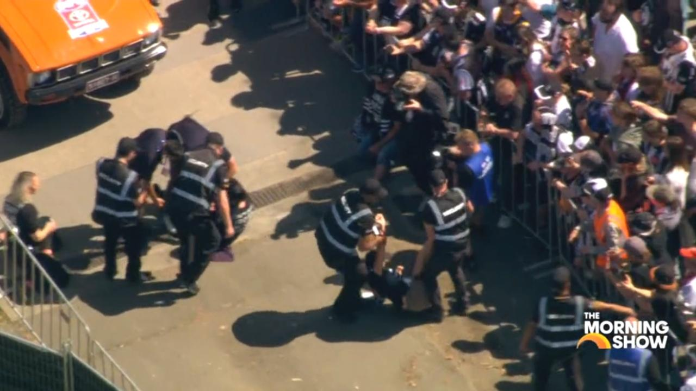
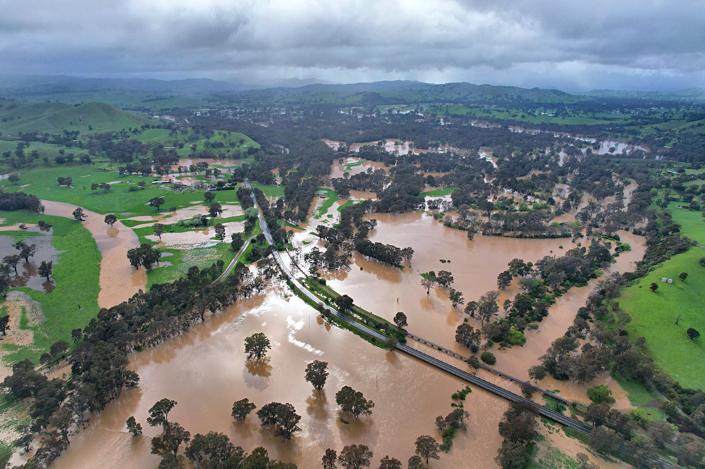
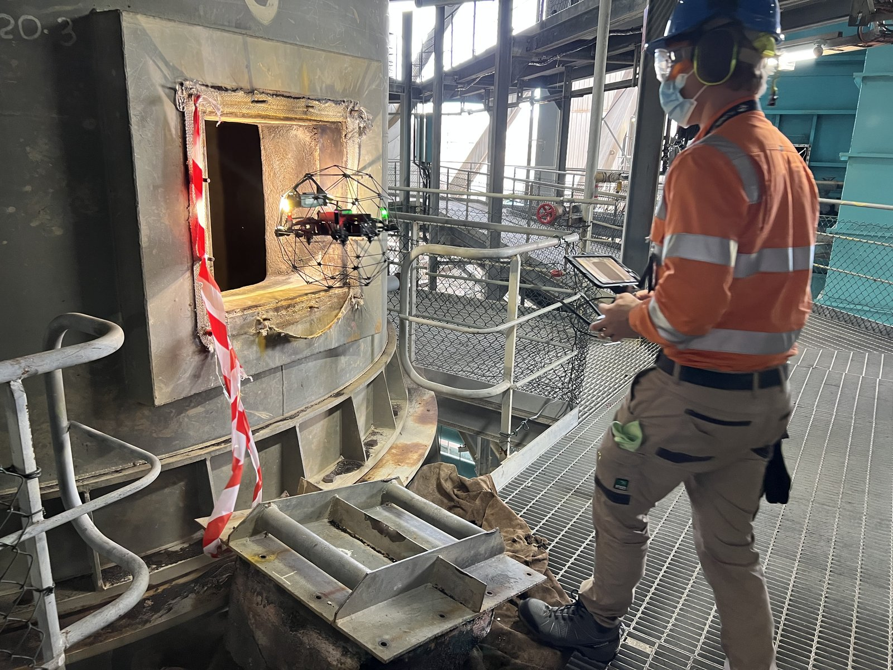

Victoria Police — AFL Grand Final Crowd Monitoring
Provided real-time aerial crowd monitoring for Victoria Police during the AFL Grand Final parade in the Melbourne CBD. Live drone feeds delivered situational awareness for security coordination across the event.

Flood Response — Goulburn River System
Conducted real-time flood headwater monitoring along the Goulburn River and subsequent large-area post-flood damage assessment. Delivered 3D georeferenced mapping to support community recovery efforts.

ATAK & Cursor on Target (CoT)
Experience integrating drone feeds into ATAK (Android Team Awareness Kit) — a cross-domain situational awareness platform used by emergency services, defence, and public safety agencies worldwide. ATAK enables real-time information sharing from drones, mobile phones, security cameras, and ground teams into a shared common operating picture.
CoT (Cursor on Target) provides the standardised data format for position and status exchange. This gives incident controllers and ground teams real-time visibility of drone operations, target locations, and environmental conditions — critical for coordinated emergency response.

Drone-in-a-Box Persistent Surveillance
Led the development and CASA certification of the AUAV onSite "Drone in a Box" system — a fully remote, monitored, and managed aerial surveillance platform with redundant power (PV/Battery/Generator) and failover communications (5G LTE/Satellite/Ethernet).
Secured ROB BVLOS approval enabling persistent, autonomous aerial monitoring — directly applicable to beach patrol, waterway surveillance, and search operations.

Operational Capability in Dynamic Environments
6,800+ hours of commercial RPAS operations including high-pressure, time-critical environments: offshore rigs, power station shutdowns, confined spaces, public events. Experience across VLOS, eVLOS, NVFR, eBVLOS, BVLOS, BVLOS-ROB, OONP, and GPS-denied operations.